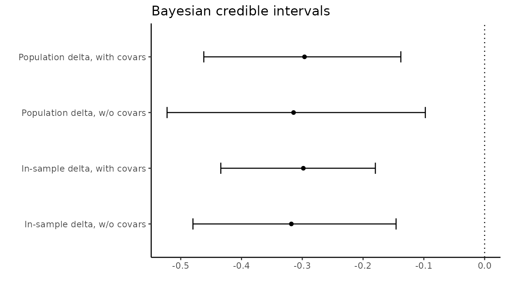

Introduction
Researchers are often interested in conditional average treatment effects (CATEs): that is, an average treatment effect conditional on the value of a moderator variable. In the context of survey design, researchers face a trade-off regarding whether to measure the relevant moderator variable before or after the treatment. Measuring the moderator before treatment can create priming bias, where respondents react differently to the treatment because, for example, the measurement of the moderator has primed a certain identity. Measuring the moderator after treatment can lead to post-treatment bias, where the value of the moderator variable is affected by the treatment.
For convenience, we use the following terms to distinguish between different survey designs:
pre-test design: moderator is measured before the treatment
post-test design: moderator is measured after the treatment
random placement design: whether the moderator is measured before or after treatment is randomized
The prepost package provides functions to help
researchers examine the robustness of results under the
post-test or random placement designs,
including nonparametric bounds for the interaction between the treatment
and moderator, sensitivity analyses, and a Bayesian parametric model to
incorporate covariates.
Data
To illustrate, we use data from a survey experiment by Del Ponte (2020) that uses a post-test design. In the experiment, the author investigates how Italian citizens respond to a hypothetical newspaper vignette describing a speech by German Chancellor Angela Merkel. The content of the speech was randomized in a 2 (praising or blaming Italy) x 2 (symbolic or economic theme) design. For simplicity, here we focus on the first contrast. The primary outcome is the respondent’s self-reported anger in response to the article. One important moderator in this study is the strength of the respondent’s Italian national identity, which was measured after the treatment. To simplify, we binarize both the outcome and the moderator variables by splitting them at the sample medians.
| Variable | Original | Recoded |
|---|---|---|
| Treatment | Content of hypothetical speech by Merkel: 2 (blames or praises Italy) x 2 (symbolic or economic theme) |
t = 1 for praise, 0 for blame |
| Moderator | Strength of Italian national identity, scale of 4 items each coded
0-3 (itaid)
|
d = 1 for above median value; 0 otherwise |
| Outcome | Self-reported anger after reading the article, scale of 2 items each
coded 0-3 (angscale) |
y = 1 for above median value; 0 otherwise |
library(dplyr)
library(ggplot2)
library(lmtest)
library(sandwich)
library(prepost)
set.seed(02134)
theme_set(theme_classic())
data(delponte)
delponte |> select(t_commonality, itaid_bin, angry_bin) |> sample_n(5)
#> t_commonality itaid_bin angry_bin
#> 1 1 1 0
#> 2 0 1 0
#> 3 1 1 0
#> 4 1 1 0
#> 5 0 1 1The author finds that the speech praising rather than blaming Italy
reduces anger more among respondents with a strong national identity. To
replicate this result, we can use OLS regression with robust standard
errors, where the model contains the interaction of the treatment,
t, and the moderator, d:
lm(angry_bin ~ t_commonality * itaid_bin, data = delponte) |>
coeftest(vcov = vcovHC)
#>
#> t test of coefficients:
#>
#> Estimate Std. Error t value Pr(>|t|)
#> (Intercept) 0.258427 0.046931 5.5066 5.632e-08 ***
#> t_commonality -0.077871 0.065694 -1.1854 0.2363882
#> itaid_bin 0.153338 0.059260 2.5875 0.0099224 **
#> t_commonality:itaid_bin -0.270168 0.076944 -3.5112 0.0004828 ***
#> ---
#> Signif. codes: 0 '***' 0.001 '**' 0.01 '*' 0.05 '.' 0.1 ' ' 1However, this model does not account for the possibility of post-treatment bias. What if the respondents’ strength of Italian national identity was affected by reading about the speech praising versus blaming Italy?
We can of course look at the average treatment effect on the moderator variable itself:
lm(itaid_bin ~ t_commonality, data = delponte) |>
coeftest(vcov = vcovHC)
#>
#> t test of coefficients:
#>
#> Estimate Std. Error t value Pr(>|t|)
#> (Intercept) 0.677536 0.028238 23.9941 <2e-16 ***
#> t_commonality 0.061594 0.038744 1.5898 0.1125
#> ---
#> Signif. codes: 0 '***' 0.001 '**' 0.01 '*' 0.05 '.' 0.1 ' ' 1However, a null result on such a test does not rule out the possibility of post-treatment bias, since individual-level effects may “cancel out” in the aggregate. Indeed, when exclude respondents with low levels of political sophistication (defined as either being in the bottom quartile on the political knowledge scale or not being regular readers of the newspaper blog where the experiment was advertised), we do observe a statistically significant treatment effect on the moderator. Reading about a speech where Merkel praises Italy (versus blames Italy) causes respondents to report higher levels of Italian national identity.
delponte_subset <- delponte |>
filter(sopscale >= quantile(sopscale, 0.25, na.rm = TRUE),
Corriere == 1)
lm(itaid_bin ~ t_commonality, data = delponte_subset) |>
coeftest(vcov = vcovHC)
#>
#> t test of coefficients:
#>
#> Estimate Std. Error t value Pr(>|t|)
#> (Intercept) 0.685345 0.030620 22.3823 < 2e-16 ***
#> t_commonality 0.086207 0.041278 2.0884 0.03731 *
#> ---
#> Signif. codes: 0 '***' 0.001 '**' 0.01 '*' 0.05 '.' 0.1 ' ' 1Nonparametric bounds
To implement the sharp bounds derived in [CITE OUR PAPER], we can use
the post_bounds() function, which returns a list containing
the values of the bounds for the interaction between the treatment and
the moderator, as well as the external confidence intervals.
bounds_1 <- post_bounds(formula = angry_bin ~ t_commonality,
data = delponte_subset,
moderator = ~ itaid_bin)
#> Bootstrap running...
#> 0% |== | 100%
#> 0% |==== | 100%
#> 0% |====== | 100%
#> 0% |======== | 100%
#> 0% |========== | 100%
#> 0% |============ | 100%
#> 0% |============== | 100%
#> 0% |================ | 100%
#> 0% |================== | 100%
#> 0% |====================| 100%
print(bounds_1)
#> $lower
#> [1] -1.391705
#>
#> $upper
#> [1] 1.391705
#>
#> $ci_lower
#> [1] -1.449048
#>
#> $ci_upper
#> [1] 1.449048
#>
#> $post_est
#> [1] -0.262191By default, the bounds are calculated assuming only randomization of treatment. However, making additional assumptions can tighten the bounds considerably. The function allows the user to toggle either of the following assumptions:
moderator_mono: Monotonicity of the post-test effect, i.e., measuring the moderator after treatment moves that moderator in one direction. Defaults toNULL.stable_mod: Stable moderator under control, i.e., the moderator under the control condition is not affected by the timing of treatment. Defaults toFALSE.
bounds_2 <- post_bounds(
formula = angry_bin ~ t_commonality,
data = delponte_subset,
moderator = ~ itaid_bin,
moderator_mono = 1,
stable_mod = TRUE
)
#> Bootstrap running...
#> 0% |== | 100%
#> 0% |==== | 100%
#> 0% |====== | 100%
#> 0% |======== | 100%
#> 0% |========== | 100%
#> 0% |============ | 100%
#> 0% |============== | 100%
#> 0% |================ | 100%
#> 0% |================== | 100%
#> 0% |====================| 100%
print(bounds_2)
#> $lower
#> [1] -0.3802878
#>
#> $upper
#> [1] -0.2203843
#>
#> $ci_lower
#> [1] -0.5212285
#>
#> $ci_upper
#> [1] -0.09330538
#>
#> $post_est
#> [1] -0.262191We can also incorporate covariates using formula syntax. (Note: in
order to incorporate covariates, the argument stable_mod
must be set to TRUE.)
Bayesian parametric model
Incorporating covariates into the nonparametric bounds is possible, but a Bayesian parametric model gives more flexibility.
gibbs_1 <- prepost_gibbs_nocovar(
formula = angry_bin ~ t_commonality,
data = delponte_subset,
prepost = ~1,
moderator = ~ itaid_bin,
iter = 250
)
gibbs_2 <- prepost_gibbs(
formula = angry_bin ~ t_commonality,
data = delponte_subset,
prepost = ~1,
moderator = ~ itaid_bin,
covariates = ~ north + satisf,
iter = 250
)We can compare the estimate and credible interval of the quantity of
interest (the interaction between the treatment and the moderator) with
and without covariates. We provide two different estimates of this
quantity: delta.1 is the in-sample estimate and
delta.2 is the population estimate.
delta_list <- list(gibbs_1$delta.1,
gibbs_1$delta.2,
gibbs_2$delta.1,
gibbs_2$delta.2)
get_ci <- function(x){
tribble(~mean, ~lowerCI, ~upperCI,
mean(x), quantile(x, 0.025), quantile(x, 0.975))
}
lapply(delta_list, get_ci) |>
bind_rows() |>
mutate(model = c(
"In-sample delta, w/o covars",
"Population delta, w/o covars",
"In-sample delta, with covars",
"Population delta, with covars"
)) |>
as_tibble() |>
ggplot(aes(
x = mean,
y = model,
xmin = lowerCI,
xmax = upperCI
)) +
geom_point() +
geom_errorbar(width = 0.2) +
geom_vline(xintercept = 0, lty = "dotted") +
labs(x = "",
y = "",
title = "Bayesian credible intervals")